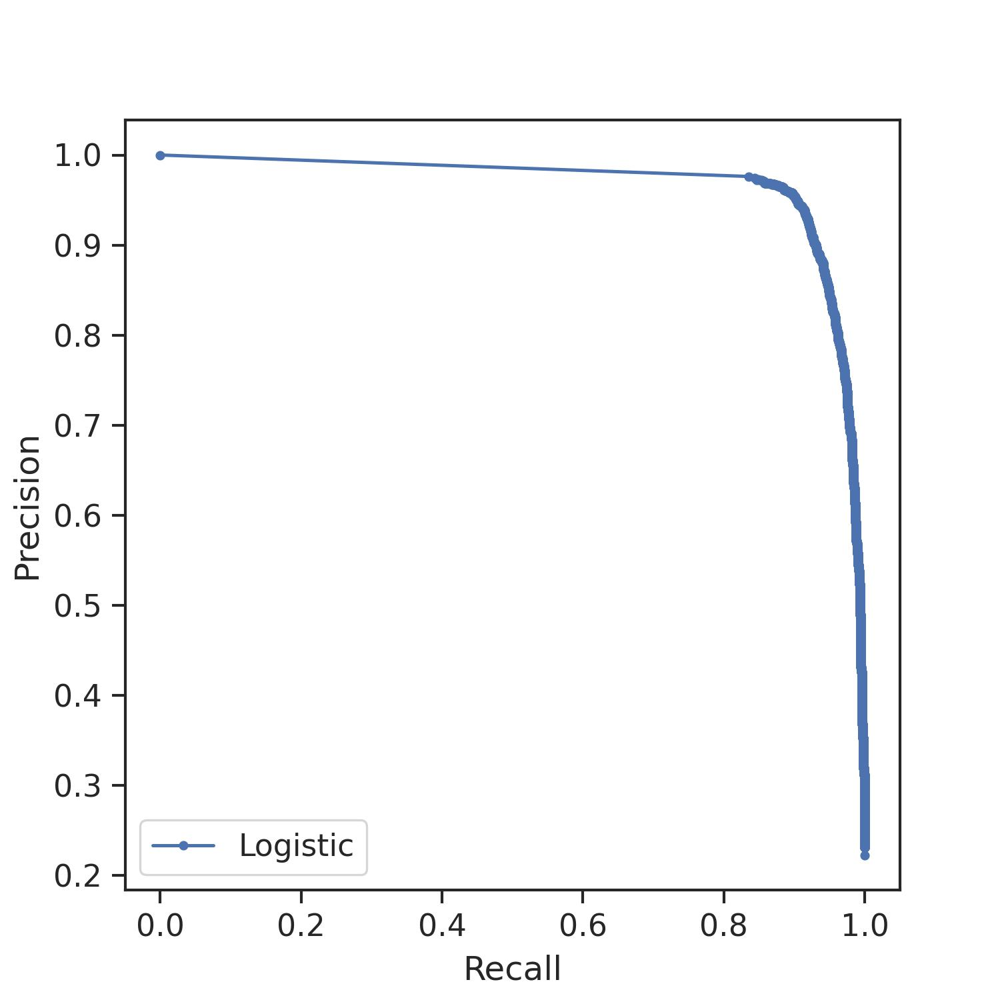

We examine deep learning’s effectiveness for TNO detection in CLASSY (Classical and Large-A Solar SYstem) survey, a CFHT Large Program now in its third year.
In recent years, progress in TNO population science has been driven by large-scale surveys, precipitating in an avalanche of data that has highlighted the need for new tools to successfully unpack the signal from the noise.
Here, we create composite images of the nightly CFHT MegaCam observations, leveraging the sky motion of fast TNOs in consecutive observations to extract a linear series of points (‘tracklets’).
These tracklets form the basis of our training dataset of ~75,000 images, which were used to train several custom convolutional neural network (CNN)-based to identify these tracklets in the CLASSY data.
The predictions from each of these networks were then combined to boost the predictive power, achieving a recall of 98.15%. This technique is effective for isolating the regions of interest in observations, reducing the load for computing the predicted orbital track and ultimately streamlining the detection pipeline.
Data
Data from one night of observations in August 22, October 22, and January 23: total of 3800 exposures
289s observations spanning 4 hours; achieving and exceeding a limiting magnitude of 26.5.
Detrending, astrometric, and photometric calibration using MegaPipe[1].
Addition of artificial TNOs ('planted sources') via TRIPPy (TRailed Image Photometry in Python)[2].
Image subtraction using the LSST pipeline (v19).
Satellites
Satellites increasingly pose a significant problem as seen in Figure 1.
They obscure objects of interest, particularly faint ones, and can affect the overall quality of the observations.
These bright streaks are not easy to remove as they vary in brightness along their length.
The technique used here isolates the pixels in the bright streak, which are then used to mask them.
Figure 1: Bright satellite streaks prominently bisect the observations (a) and can obscure small tracklets, like those of TNOs. They have been masked (b) to improve the composition of the stacked observation.
Methodology
The methodology applied was adapted from [3]. The workflow for preparing the data is as follows:
Build composite image stacks of nightly observations; one stack per chip per pointing.
Split each stack into 128 x 128 images:
629 tiles per image -> 25,160 per night -> 75,480 for 3 nights of observations
Review all images and separate those with and without tracklets.
6979 with tracklets and 68,501 without
Tracklet images: random 85:15 split into training and test set, no overlaps.
Training data augmented x 5, test data augmented x 2
No tracklet images: chose random 80%, then random 80:20 split into training and test set. No overlaps, no augmentation.
Figure 2: Tracklets of some of the new objects seen in the 3 nights of CLASSY pointings. More than 800 tracklets of objects that are not TNOs have been captured in these observations, many of which are not known to the MPC either. The decision was made to initially train the neural networks to find tracklets of any object with a distinctive tracklet moving in the field of view.Figure 3: The neural network ensemble trained for identifying images with tracklets. Each network makes a prediction about the input image and the highest value prediction is selected as the winner.
The major consideration for selecting neural network architectures was to avoid overfitting.
Composition of the images means that there are many irrelevant abstractions and we want to focus the learning on the tracklet pattern.
The chosen architectures are relatively small with fewer trainable parameters and with an aggressive dropout to further curtail overfitting.
A novel "hybrid module" (Figure 4) was introduced, which was proven to boost performance.
These models were pretrained to find asteroid tracklets in microlensing data[3] and had demonstrated that they generalized well to unseen data.
They were fine tuned for 20-30 epochs with the purpose-built CLASSY dataset on a machine with a single GPU, with each network taking no longer than an hour to retrain.
As each network learns a different mapping from input to output, ensemling them achieves a better result than from the individual models.
Here, each neural network classifies an image and the highest value prediction is chosen.
Figure 4: The hybrid module used by 3 of the models in the ensemble is composed of multi-scale filters like the Inception architecture and skip connections like the ResNet architecture. The multiple 1x1 convolutions increase the complexity of the data and thus improve the performance.
Results
Figure 5: The confusion matrix that helps us visualize the classification performed by the ensemble. Evaluation metrics are derived from these values. Images with probabilities over 0.5 are classified as having tracklets.
The salient performance metric here is recall, which tells us how many of the tracklet images the network classified correctly.
This relates to the "False Negative" - misclassified tracklet images - in the confusion matrix, a value we want to minimize.
The evaluation metrics are:
Recall: 98.15%
Precision: 68.13%
F2 Score: 90.20%
Precision tells us how many of the images classified as tracklets were correct. The lower value here indicates the number of false positives. The F2 Score is the weighted mean of the recall and precision, which is further weighted to favour recall.
Figure 6: The receiver operating characteristic (ROC) curve shows us the tradeoff between how sensitive the model is to finding tracklets (true positive rate) and how often it raises a false alarm (false positive rate). The area under the curve (ROC AUC) is 98.80%. Images with probabilities over 0.5 are classified as having tracklets.

Figure 7: The precision-recall curve that shows the tradeoff between precision and recall at different probability thresholds. The area under the precision recall curve (PR AUC) is 96.74%.
Discussion
This initial phase has shown that it is possible to re-train neural network architectures to identify tracklets of moving objects in the CLASSY observations.
A review of the false negatives shows that it is the faintest tracklets that are missed. Further training with more labelled data will augment the numbers of faint tracklets with image processing techniques.
We are in the process of comparing these results against the PKGMOD [4] shift-and-stack output to investigate how the two processes can be to boost the results.
The tracklets can be filtered by length, which means the technique can be used for discovery or recovery of the myriad solar system objects closer to us than TNOs as well.
Future work will involve investigating image clustering techniques to group tracklets based on their foot print in the images.
Planted TNO sources will be invaluable to train deep learning-based object detectors like YOLO to localise TNOs.
Given that there are so many non-TNO solar system bodies in the data, their astrometry can be used to find potential matches in the Minor Planet Center's Isolated Tracklet file [5].
The tracklet buiding technique combined with the exceptional depth and clarity of the CLASSY observations make it ideal for centaur discovery. These illusive bodies orbit the vast region between Jupiter and Neptune and can be overlooked because of their varying orbital speed.